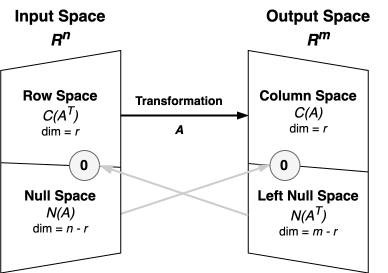

To the uninitiated, a matrix is often perceived as little more than a static grid of numbers—a convenient method for organizing data. This view, while practical, obscures a profound and dynamic reality. The true essence of a matrix is not that of a container but of an operator; it is not a noun but a verb. Each matrix is the embodiment of a linear transformation, a precise geometric action that can stretch, rotate,shear, or project the very space in which it operates.
This shift in perspective—from a static array to an active operator—is the single most important step in moving from elementary computation to a deep, intuitive understanding of linear algebra. The operations of a matrix are not arbitrary manipulations of numbers; they are the elegant language of spatial transformation. When we apply a matrix to a vector, we are not just calculating a new set of coordinates; we are mapping that vector from one location to another in a highly structured way, revealing the fundamental connections between the input and output spaces of a system.
The power of this viewpoint cannot be overstated. In any field where systems are modeled or data is analyzed, the core challenge often reduces to understanding how an input is transformed into an output. By framing these processes as geometric transformations, we can leverage a rich visual and conceptual toolkit to analyze system behavior, identify invariant properties, and construct optimal solutions. This article aims to build this geometric intuition from the ground up. We will begin by defining the "canvas" itself—the vector spaces that provide the stage for our work. We will then introduce the tools of geometry—the inner product and orthogonality—before finally exploring the gallery of actions that matrices, as linear transformations, bring to life.
The Canvas — Defining the Universe of Vectors
Before we can explore the action of transformations, we must first understand the stage on which they perform: the vector space. This section lays the groundwork by defining these spaces, introducing the geometric tools that give them structure, and establishing the core concepts of basis and dimension.
At its core, a vector space is a collection of objects called "vectors" that can be added together and scaled by numbers. While we often visualize vectors as arrows pointing in space, this is merely one concrete example of a much grander concept. The power of abstracting the idea of a vector space lies in its generality. The "vectors" in a space can be anything from polynomials to audio signals, from the solutions to a differential equation to the weight configurations of a neural network, so long as they obey a consistent set of rules.
For a collection of objects to qualify as a vector space, it must satisfy two fundamental closure properties. First, it must be closed under addition: if you take any two vectors in the space and add them together, the result must also be a vector within that same space. Second, it must be closed under scalar multiplication: if you take any vector and multiply it by any scalar (a real or complex number, depending on the field), the resulting scaled vector must also remain within the space. These two properties, along with a handful of supporting axioms, are all that is required to create a self-contained, consistent universe of vectors. This universe, the vector space, represents the complete set of all possible states a system can be in—the full expanse where our work takes place.
Definition: Vector Space
A vector space over a field $\mathcal{F}$ (typically the real numbers $\mathbb{R}$ or complex numbers $\mathbb{C}$) is a non-empty set $\mathcal{V}$ of objects, called vectors, on which two operations are defined: vector addition (+) and scalar multiplication (·). These operations must satisfy the following ten axioms for all vectors $\mathbf{u}, \mathbf{v}, \mathbf{w}$ in $\mathcal{V}$ and all scalars $a, b$ in $\mathcal{F}$:
- Closure under addition: $\mathbf{u} + \mathbf{v}$ is in $\mathcal{V}$.
- Commutativity of addition: $\mathbf{u} + \mathbf{v} = \mathbf{v} + \mathbf{u}$.
- Associativity of addition: $(\mathbf{u} + \mathbf{v}) + \mathbf{w} = \mathbf{u} + (\mathbf{v} + \mathbf{w})$.
- Existence of an additive identity: There exists a zero vector $\mathbf{0}$ in $\mathcal{V}$ such that $\mathbf{u} + \mathbf{0} = \mathbf{u}$.
- Existence of an additive inverse: For every $\mathbf{u}$ in $\mathcal{V}$, there exists a vector $-\mathbf{u}$ in $\mathcal{V}$ such that $\mathbf{u} + (-\mathbf{u}) = \mathbf{0}$.
- Closure under scalar multiplication: $a \cdot \mathbf{u}$ is in $\mathcal{V}$.
- Associativity of scalar multiplication: $(ab) \cdot \mathbf{u} = a \cdot (b \cdot \mathbf{u})$.
- Distributivity of scalar multiplication w.r.t. vector addition: $a \cdot (\mathbf{u} + \mathbf{v}) = a \cdot \mathbf{u} + a \cdot \mathbf{v}$.
- Distributivity of scalar multiplication w.r.t. field addition: $(a + b) \cdot \mathbf{u} = a \cdot \mathbf{u} + b \cdot \mathbf{u}$.
- Existence of a scalar multiplicative identity: $1 \cdot \mathbf{u} = \mathbf{u}$, where $1$ is the multiplicative identity in $\mathcal{F}$.
From Spaces to Geometry: The Inner Product
A vector space, as defined by the axioms above, is a purely algebraic structure. It provides a framework for scaling and adding vectors, but it says nothing about the familiar geometric concepts of length, distance, or angle. To infuse our abstract space with this geometric intuition, we must introduce an additional operation: the inner product. An inner product is a function that takes two vectors and maps them to a scalar, providing a quantitative measure of their relationship. For the familiar space $\mathbb{R}^n$, this is the well-known dot product, but the concept generalizes to any vector space that can be equipped with such an operation.
Definition: Inner Product
An inner product on a complex vector space $\mathcal{V}$ is a function $\langle \cdot, \cdot \rangle: \mathcal{V} \times \mathcal{V} \to \mathbb{C}$ that satisfies the following axioms for all vectors $\mathbf{u}, \mathbf{v}, \mathbf{w}$ in $\mathcal{V}$ and any scalar $a \in \mathbb{C}$:
- Conjugate Symmetry: $\langle \mathbf{u}, \mathbf{v} \rangle = \overline{\langle \mathbf{v}, \mathbf{u} \rangle}$. (For real vector spaces, this simplifies to symmetry: $\langle \mathbf{u}, \mathbf{v} \rangle = \langle \mathbf{v}, \mathbf{u} \rangle$).
- Linearity in the first argument: $\langle a\mathbf{u} + \mathbf{v}, \mathbf{w} \rangle = a\langle \mathbf{u}, \mathbf{w} \rangle + \langle \mathbf{v}, \mathbf{w} \rangle$.
- Positive-definiteness: $\langle \mathbf{v}, \mathbf{v} \rangle \ge 0$, and $\langle \mathbf{v}, \mathbf{v} \rangle = 0$ if and only if $\mathbf{v} = \mathbf{0}$.
An inner product, denoted $\langle \mathbf{u}, \mathbf{v} \rangle$, endows a vector space with its geometric soul. From this single operation, all our geometric notions arise, including the norm (length) of a vector, $\|\mathbf{v}\| = \sqrt{\langle \mathbf{v}, \mathbf{v} \rangle}$, and the distance between two vectors, $\|\mathbf{u} - \mathbf{v}\|$. The following propositions formalize the core geometric rules that govern all inner product spaces.
Proposition: The Cauchy-Schwarz Inequality
For any vectors $\mathbf{u}, \mathbf{v}$ in an inner product space $\mathcal{V}$, the following inequality holds: $$|\langle \mathbf{u}, \mathbf{v} \rangle| \le \|\mathbf{u}\| \|\mathbf{v}\|$$
Equality holds if and only if $\mathbf{u}$ and $\mathbf{v}$ are linearly dependent. This inequality is fundamental as it allows the definition of an angle between vectors.
Proposition: The Triangle Inequality
For any vectors $\mathbf{u}, \mathbf{v}$ in an inner product space $\mathcal{V}$, the norm satisfies: $$\|\mathbf{u} + \mathbf{v}\| \le \|\mathbf{u}\| + \|\mathbf{v}\|$$
This proposition codifies the geometric intuition that the length of any side of a triangle cannot be greater than the sum of the lengths of the other two sides.
Proposition: The Parallelogram Law
For any vectors $\mathbf{u}, \mathbf{v}$ in an inner product space $\mathcal{V}$, the following identity holds: $$2\|\mathbf{u}\|^2 + 2\|\mathbf{v}\|^2 = \|\mathbf{u} + \mathbf{v}\|^2 + \|\mathbf{u} - \mathbf{v}\|^2$$
This law states that the sum of the squares of the lengths of the four sides of a parallelogram equals the sum of the squares of the lengths of its two diagonals.
Perhaps the most profound concept to emerge from the inner product is orthogonality. Two non-zero vectors $\mathbf{u}$ and $\mathbf{v}$ are said to be orthogonal if their inner product is zero: $\langle \mathbf{u}, \mathbf{v} \rangle = 0$. This is the abstract generalization of "perpendicularity," and it gives rise to its own foundational geometric theorem. A vector space equipped with an inner product is known as an inner product space, the true canvas for the geometry of linear algebra.
Proposition: The Pythagorean Theorem
If two vectors $\mathbf{u}, \mathbf{v}$ in an inner product space $\mathcal{V}$ are orthogonal, then: $$\|\mathbf{u} + \mathbf{v}\|^2 = \|\mathbf{u}\|^2 + \|\mathbf{v}\|^2$$
The Building Blocks: Span, Basis, and Dimension
While a vector space may contain an infinite number of vectors, it is often possible to describe it using a small, finite collection of fundamental building blocks. The concepts of span, basis, and dimension provide the language to do this. The span of a set of vectors $\{\mathbf{v}_1, \dots, \mathbf{v}_k\}$ is the set of all possible vectors that can be reached through their linear combination, $c_1\mathbf{v}_1 + \dots + c_k\mathbf{v}_k$. It represents the full extent of the space that can be generated from that initial set.
The notion of linear independence introduces the idea of efficiency and non-redundancy. A set of vectors is linearly independent if no vector in the set can be written as a linear combination of the others. Each vector contributes a genuinely new direction that cannot be replicated by the rest of the set. This leads directly to the concept of a basis. A basis for a vector space $\mathcal{V}$ is a set of vectors that both spans $\mathcal{V}$ and is linearly independent. It is, in essence, a minimal set of directions required to construct every vector in the space. The number of vectors in any basis for a given space is always the same, and this unique number is called the dimension of the space. It is the ultimate measure of a space's size and complexity.
The moment we choose a basis for an n-dimensional vector space, we establish a perfect, one-to-one correspondence between every abstract vector in that space and a familiar coordinate vector in $\mathbb{R}^n$. This powerful link, known formally as an isomorphism, is precisely what allows us to take a problem from any applied field and recast it as a geometric problem that we can see and solve. It's the bridge from the abstract to the concrete.
It is crucial to understand how the algebraic concept of linear independence relates to the geometric concept of orthogonality. Linear independence is the more general idea: it applies to any vector space and simply means that the vectors in a set are not redundant. Orthogonality, however, requires the additional structure of an inner product and is a much stricter condition. The connection is profound: any set of non-zero, mutually orthogonal vectors is guaranteed to be linearly independent. The converse, however, is not true; a set of vectors can be linearly independent without being orthogonal. Geometrically, one can think of linearly independent vectors as pointing in directions that are not redundant, while orthogonal vectors point in directions that are perfectly perpendicular, sharing no component or "shadow" with one another. In this sense, while linear independence ensures algebraic non-redundancy, orthogonality is the ultimate form of geometric independence.
When our vector space is also an inner product space, we can define the ideal type of coordinate system: an orthonormal basis. This is a basis where every vector has a norm of one (unit length) and is orthogonal to every other vector in the basis. This simplifies calculations enormously. Finding the coordinates of a vector with respect to an orthonormal basis becomes a simple matter of taking an inner product—a projection—rather than solving a system of linear equations. This remarkable property is captured by the following result.
Proposition: Bessel's Inequality
If $\{\mathbf{e}_1, \dots, \mathbf{e}_k\}$ is any orthonormal set of vectors in an inner product space $\mathcal{V}$, then for any vector $\mathbf{v} \in \mathcal{V}$: $$\sum_{i=1}^k |\langle \mathbf{v}, \mathbf{e}_i \rangle|^2 \le \|\mathbf{v}\|^2$$
This inequality states that the sum of the squared lengths of the projections of a vector onto a set of orthonormal directions can never exceed the squared length of the vector itself. If the set forms a complete orthonormal basis for the space, this becomes an equality known as Parseval's identity.
Subspaces: Worlds Within Worlds
One of the most powerful and frequently encountered concepts is that of a subspace. A subspace is a subset of a larger vector space that is itself a complete vector space under the same operations of addition and scalar multiplication. Geometrically, subspaces are "flat" surfaces that pass through the origin of the parent space, such as lines and planes within three-dimensional space. To verify that a subset $\mathcal{W}$ of a vector space $\mathcal{V}$ is a subspace, one only needs to check three conditions: that the zero vector of $\mathcal{V}$ is in $\mathcal{W}$, that $\mathcal{W}$ is closed under vector addition, and that it is closed under scalar multiplication. The concept of a subspace is not merely a technicality; it is central to a deeper understanding of the solutions to systems of equations and the fundamental behavior of linear transformations. For instance, the set of all solutions to a homogeneous system of linear equations, $A\mathbf{x} = \mathbf{0}$, always forms a critically important subspace known as the null space, which we will explore in detail.
The Action — Linear Transformations and Their Matrix Representations
Now that we have established the vector space as our stage, we can introduce the main players: linear transformations. These are the fundamental actions or functions that map vectors from one space to another while preserving the underlying vector space structure. Here, we will define these transformations abstractly and then show how the familiar matrix emerges as the concrete, computational representation of this action.
A transformation (or mapping) $T$ is a function that takes an input vector $\mathbf{v}$ from a vector space $\mathcal{V}$ and produces an output vector $T(\mathbf{v})$ in a vector space $\mathcal{W}$. For this transformation to be linear, it must respect the two core operations of the vector space: addition and scalar multiplication. Specifically, a transformation $T: \mathcal{V} \to \mathcal{W}$ is linear if it satisfies two properties for all vectors $\mathbf{u}, \mathbf{v} \in \mathcal{V}$ and any scalar $c$:
- Additivity: $T(\mathbf{u} + \mathbf{v}) = T(\mathbf{u}) + T(\mathbf{v})$
- Homogeneity: $T(c\mathbf{u}) = cT(\mathbf{u})$
The first property states that transforming the sum of two vectors is the same as adding their individual transformations. The second states that transforming a scaled vector is the same as scaling its transformation. Together, these properties have a profound geometric meaning: lines remain lines, and the origin remains fixed. A linear transformation can rotate, scale, or shear the space, but it cannot bend, curve, or break it. The grid of the space remains a uniform grid; it is this structure-preserving property that makes linear transformations so tractable and foundational.
The Matrix: A Transformation Made Concrete
The abstract concept of a linear transformation is powerful, but for computation, we need a concrete representation. This is the role of the matrix. A linear transformation is fully characterized by its effect on a basis. Once we choose a basis $\{\mathbf{v}_1, \dots, \mathbf{v}_n\}$ for the input space $\mathcal{V}$ and a basis $\{\mathbf{w}_1, \dots, \mathbf{w}_m\}$ for the output space $\mathcal{W}$, any linear transformation $T: \mathcal{V} \to \mathcal{W}$ can be uniquely described by an $m \times n$ matrix $A$.
The construction of this matrix is remarkably elegant: the $j$-th column of the matrix $A$ is simply the coordinate vector of $T(\mathbf{v}_j)$—the transformed $j$-th basis vector of the input space—expressed in the basis of the output space. The matrix, therefore, is a record of where the transformation sends the basis vectors. Because any vector in $\mathcal{V}$ is just a linear combination of these basis vectors, and because the transformation is linear, knowing where the basis vectors land is sufficient to determine where every other vector lands. The familiar process of matrix-vector multiplication, $\mathbf{y} = A\mathbf{x}$, is the computational manifestation of this principle. It takes the coordinates of a vector $\mathbf{x}$ in the input basis, uses the columns of $A$ as a recipe book for transforming those basis vectors, and produces the coordinates of the output vector $\mathbf{y}$ in the output basis. The matrix is the bridge from the abstract action to concrete arithmetic.
A Gallery of Geometric Actions
Linear transformations encompass a wide range of geometric behaviors. By examining the matrices that represent them (typically in the standard basis of $\mathbb{R}^2$ for visualization), we can gain a strong intuition for their effects.
- Scaling: This transformation stretches or contracts the space along the coordinate axes. A scaling transformation is represented by a diagonal matrix. For instance, the matrix below scales the horizontal axis by a factor of 2 and leaves the vertical axis unchanged. $$A = \begin{pmatrix} 2 & 0 \\ 0 & 1 \end{pmatrix}$$
- Rotation: This transformation rotates the entire space around the origin by a given angle $\theta$. The matrix representation of a counter-clockwise rotation in $\mathbb{R}^2$ is a classic example of an orthogonal matrix—its columns form an orthonormal basis, which is why it preserves all lengths and angles. $$A = \begin{pmatrix} \cos\theta & -\sin\theta \\ \sin\theta & \cos\theta \end{pmatrix}$$
- Shear: A shear transformation "tilts" one axis along the direction of another. For example, a horizontal shear pushes vectors horizontally, with the amount of the push being proportional to their vertical component. This is represented by a non-diagonal, triangular matrix. $$A = \begin{pmatrix} 1 & k \\ 0 & 1 \end{pmatrix}$$
- Projection: A projection is a transformation that "flattens" vectors onto a subspace. For example, the transformation that projects every vector in $\mathbb{R}^2$ onto the x-axis is represented by the following matrix. Note that this transformation is not invertible; information (the y-component) is lost. $$A = \begin{pmatrix} 1 & 0 \\ 0 & 0 \end{pmatrix}$$
These elementary transformations are the building blocks for more complex linear operations, which can be seen as compositions of these fundamental actions.
Among the gallery of linear transformations, projections hold a place of special importance, as they are intrinsically linked to the problem of optimization. A projection is the quintessential application of orthogonality to find the "best" approximation. The core problem is this: given a vector $\mathbf{b}$ and a subspace $\mathcal{W}$, find the vector $\mathbf{p}$ in $\mathcal{W}$ that is closest to $\mathbf{b}$. The solution is found not by minimizing distance directly, but by employing a geometric principle: the shortest distance from a point to a plane is along the line perpendicular to the plane.
The solution, the vector $\mathbf{p}$, is the orthogonal projection of $\mathbf{b}$ onto $\mathcal{W}$. It is the unique vector in $\mathcal{W}$ such that the error vector, $\mathbf{e} = \mathbf{b} - \mathbf{p}$, is orthogonal to every vector in the subspace $\mathcal{W}$. This orthogonal condition, $\langle \mathbf{b} - \mathbf{p}, \mathbf{w} \rangle = 0$ for all $\mathbf{w} \in \mathcal{W}$, is the key. It transforms an optimization problem (finding the minimum of $\|\mathbf{b} - \mathbf{p}\|$) into a system of linear equations. This principle is the foundation of least-squares solutions, which are central to fields from data fitting and machine learning to signal processing.
The Anatomy of a Matrix — The Four Fundamental Subspaces
Having established that a matrix is the concrete representation of a linear transformation, we now dissect the matrix itself. The structure of a matrix is profoundly revealing; it contains four special subspaces that completely characterize the behavior of the transformation it represents.
An $m \times n$ matrix $A$ embodies a linear transformation from an $n$-dimensional input space (the domain) to an $m$-dimensional output space (the codomain). For the common case of real-valued matrices, this is a map $T: \mathbb{R}^n \to \mathbb{R}^m$. The genius of the four fundamental subspaces is that they provide a complete geometric decomposition of these two spaces, telling us exactly how the transformation acts on every possible input vector. They reveal what is transformed, what is lost, and what is possible.
- The Column Space, $C(A)$: The Range of the Possible
The first fundamental subspace is the column space of $A$, denoted $C(A)$. It is defined as the span of the column vectors of the matrix. The column space is a subspace of the output space $\mathbb{R}^m$. Its true importance, however, lies in its connection to the transformation itself: the column space is the range or image of the transformation. This means that the column space is the set of all possible output vectors. For any input vector $\mathbf{x}$, the output $\mathbf{y} = A\mathbf{x}$ is, by the definition of matrix-vector multiplication, a linear combination of the columns of $A$. Therefore, every possible output must lie within the span of the columns. The column space is the "landing zone" for the transformation; no vector outside of this subspace can ever be produced. This answers a critical question about a system: what are all the possible outcomes? The answer is the column space. - The Null Space, $N(A)$: The Space of Oblivion
If the column space tells us what is possible, the second fundamental subspace tells us what is lost. The null space of $A$, denoted $N(A)$, is the set of all vectors in the input space $\mathbb{R}^n$ that are mapped to the zero vector in the output space. It is the solution set to the homogeneous equation $A\mathbf{x} = \mathbf{0}$. In the language of abstract transformations, this is called the kernel. The null space is the space of oblivion. Any vector $\mathbf{x}$ that resides in the null space is "crushed" or "annihilated" by the transformation, becoming indistinguishable from the origin. If the null space contains more than just the zero vector, the transformation is a "many-to-one" mapping, meaning multiple distinct input vectors are mapped to the same output vector. The dimension of the null space, called the nullity, is a direct measure of how much information is lost by the transformation. A non-trivial null space is the reason a transformation may not be invertible. - The Row Space, $C(A^T)$: The Effective Input
The third fundamental subspace is the row space of $A$. It is defined as the span of the row vectors of $A$ and is a subspace of the input space $\mathbb{R}^n$. Alternatively, it can be viewed as the column space of the transpose, $C(A^T)$. While the column space tells us where the transformation can go, the row space tells us what part of the input space actually gets there. This is where orthogonality provides its deepest insight. The row space and the null space are not just two random subspaces of the input space; they are orthogonal complements. This means that every vector in the row space is orthogonal to every vector in the null space. Together, they span the entire input space, $\mathbb{R}^n$. Any input vector $\mathbf{x}$ can be uniquely split into two perpendicular components: a part in the row space, $\mathbf{x}_{\text{row}}$, and a part in the null space, $\mathbf{x}_{\text{null}}$. When the transformation is applied, the null space component is annihilated ($A\mathbf{x}_{\text{null}} = \mathbf{0}$), while the row space component is mapped non-trivially into the column space ($A\mathbf{x}_{\text{row}} = A\mathbf{x}$). The row space, therefore, represents the effective domain of the transformation—the only part of the input space that produces a non-zero output. - The Left Null Space, $N(A^T)$: The Unreachable Outputs
The final piece of the puzzle is the left null space, or the null space of the transpose, $N(A^T)$. This is the set of all vectors $\mathbf{y}$ in the output space $\mathbb{R}^m$ such that $A^T\mathbf{y} = \mathbf{0}$. Just as the null space reveals the part of the input domain that gets crushed, the left null space reveals the part of the output codomain that is fundamentally unreachable. The connection is, once again, through orthogonality. The left null space is the orthogonal complement of the column space. This means every vector in the left null space is perpendicular to every vector in the column space (the range of the transformation). If a vector is in the left null space, it is impossible for it to be an output of the transformation $A\mathbf{x}$ for any $\mathbf{x}$. It represents the part of the output space that is "missed" entirely.

A remarkable fact, and one of the most important in linear algebra, is that the row space and the column space of any matrix always have the same dimension. This common dimension is called the rank of the matrix, denoted as $\text{rank}(A)$. The rank is the true measure of the "size" or "degeneracy" of a transformation. It tells us the dimension of the effective input (the row space) and, critically, the dimension of the effective output (the column space). A transformation with a high rank preserves more information and has a larger range, while a transformation with a low rank collapses the space into a smaller-dimensional subspace.
The four fundamental subspaces provide a complete, elegant, and profoundly useful decomposition of a linear transformation. The Fundamental Theorem of Linear Algebra connects them all. For an $m \times n$ matrix $A$ of rank $r$:
- The input space $\mathbb{R}^n$ is split into two orthogonal subspaces: the row space $C(A^T)$ and the null space $N(A)$. Their dimensions are $\dim(C(A^T)) = r$ and $\dim(N(A)) = n-r$.
- The output space $\mathbb{R}^m$ is split into two orthogonal subspaces: the column space $C(A)$ and the left null space $N(A^T)$. Their dimensions are $\dim(C(A)) = r$ and $\dim(N(A^T)) = m-r$.
The transformation $A$ acts as a bridge between these spaces. It takes the $r$-dimensional row space and maps it one-to-one and onto the $r$-dimensional column space. In doing so, it takes the $(n-r)$-dimensional null space and maps all of it to the zero vector. This beautiful, symmetric picture reveals the entire geometry of the transformation.
Conclusion: The Unified View
The journey from viewing a matrix as a static array of numbers to seeing it as the embodiment of a geometric action is a transformative one. A matrix is not merely a computational tool; it is a rich, descriptive object that encodes the fundamental properties of a linear system. By understanding that a matrix represents a linear transformation, and that its structure is perfectly revealed by the four fundamental subspaces and their deep orthogonal relationships, we gain a powerful, intuitive framework for analysis. The concepts of space, basis, orthogonality, and transformation are not separate topics but deeply interwoven threads in the single, elegant tapestry of linear algebra. They provide the language and the tools to understand the structure of data, the behavior of systems, and the nature of approximation and optimization across countless fields of science and engineering.